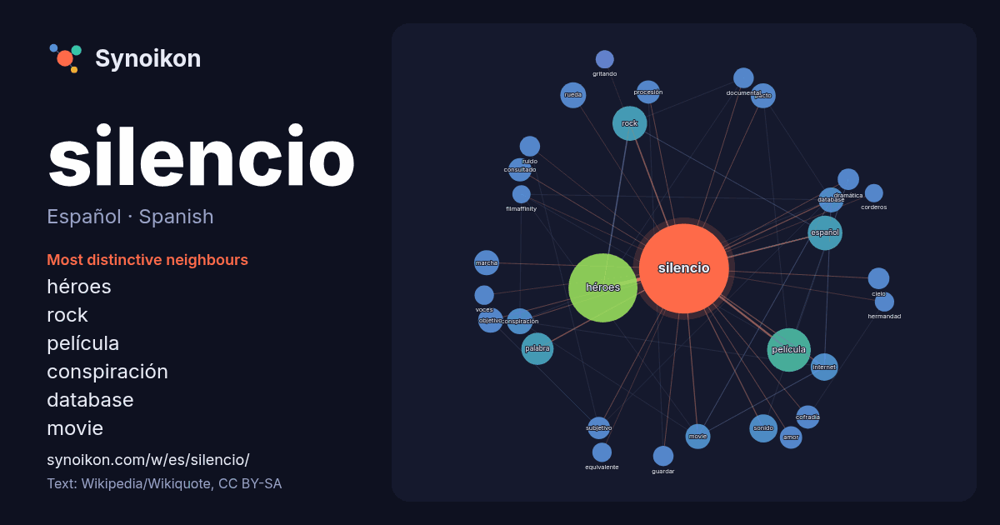

Español · Spanish · word of the day list
silencio
“silence” · The words found around it in 1182 instances from Spanish Wikipedia, Wikiquote.

Most distinctive neighbours
- héroes 97×
- rock 19×
- película 17×
- conspiración 16×
- database 16×
- movie 16×
- rueda 15×
- internet 15×
- palabra 15×
- pacto 14×
- sonido 14×
- consultado 14×
- español 13×
- subjetivo 13×
- procesión 13×
- cofradía 13×
- marcha 12×
- dramática 11×
- guardar 11×
- ruido 10×
× = how many times more often than in general Spanish Wikipedia text.
Most frequent neighbours
- héroes 115
- película 46
- español 29
- rock 29
- palabra 25
- españa 21
- álbum 19
- sonido 19
- internet 18
- ciudad 17
- música 17
- conspiración 16
- rueda 16
- database 15
- grupo 15
- marcha 15
- movie 15
- objetivo 15
- pacto 15
- cine 14
In context
- El término silencio puede referirse: al silencio (sonido), la ausencia de sonido; al silencio (música), el signo que se utiliza para medir la duración Wikipedia snippets · Silencio
- iban a llamarse. Entonces, uno de ellos sugirió Héroes del Silencio («Héroe del silencio» era el título de una de sus canciones, que luego cambiaron Wikipedia snippets · Héroes del Silencio
- correspondiente silencio que representa su mismo valor o duración. Se considera que el silencio es una nota que no se ejecuta. La combinación de silencios utilizados Wikipedia snippets · Silencio (música)
- La Reurbanización El Silencio o simplemente El Silencio es una urbanización de Caracas, Venezuela que se encuentra dentro del Casco Central de esa ciudad Wikipedia snippets · Reurbanización El Silencio
- guardar silencio mientras dura la procesión. Una de las más importantes del ciclo de la Semana Santa es precisamente la denominada Procesión del Silencio. Individualmen … Wikipedia snippets · Voto de silencio
- ¡Silencio, se rueda! es una historieta de 1995 del dibujante de cómics español Francisco Ibáñez perteneciente a la serie Mortadelo y Filemón. Firmada y Wikipedia snippets · ¡Silencio, se rueda!
- Un minuto de silencio es una expresión de luto y condolencias realizada con un silencio, rezo, reflexión o meditación durante un tiempo determinado. Se Wikipedia snippets · Minuto de silencio
- Las torres del silencio (también conocidas como dakhma, dokhma o doongerwadi) son edificios funerarios de la religión zoroástrica, ubicados principalmente Wikipedia snippets · Torre del silencio
More Spanish words
- agua
- arte
- bosque
- caballo
- camino
- campana
- canción
- ciencia
- ciudad
- clima
- comida
- corazón
- desierto
- dinero
- dios
- espejo
- estrella
- familia
- fuerza
- gato
- historia
- invierno
- isla
- jardín
- lengua
- lluvia
- madre
- mapa
- miel
- montaña
- muerte
- naturaleza
- oro
- otoño
- pan
- perro
- puente
- reloj
- sal
- salud
- sombra
- tiempo
- tormenta
- trabajo
- tren
- té
- verano
- verdad
- vida
Precomputed on 2026-10-09 with default settings (±5 words, medium corpus). The interactive map can refresh it with live data.